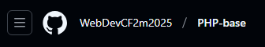

Documentation rapide de GIT
N'hésitez pas a utiliser Ctrl-F pour aller chercher un text directement
Lors de projet commun
Etape 1 : Creer un fork du projet, sur le github du chef de projet. Cela va creer une copie sur votre github

Etape 2 : Ouvrez le terminal Bash a l'endroit ou vous voulez cloner votre projet et entrez
la commande
git clone git@github.com:agim-coroli/PHP-base.git suivi de la clé SSH du
projet

Etape 3 : Lorsque vous voulez travailler sur votre fork, ne toucher pas au main, mais creer plutot une branche avec la commande git checkout -b nomDeLaBranche Cela va créer la branche et egalement vous placer dessu

Etape 4 : Une fois votre travaille effectuer sur la nouvelle branche, vous devez push votre travaille sur cette branche avec git push origin nomDeLaBranche
Etape 5 : Une fois vos modification push à létape 4, vous devez faire un pull request sur votre fork de github, cela fera automatiquement une demande au chef de projet sur son github


Etape 6 : Une fois que vous avez cliqué sur new pull request a l'étape 5. Vous devez annoncer de ou vers ou vous voulez creer le pull request. Ici vous partez de votre branche vers la main du projet original.

Etape 7 : Dans le cas ou il y'a eu des modification dans la copie original du chef de projet
Lors de projet commun
Etape 1 : Creer
Lors de projet commun
Etape 1 : Creer